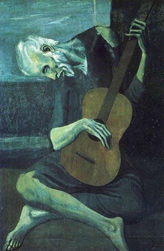
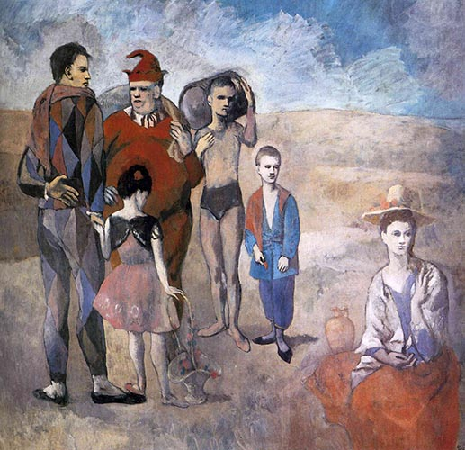
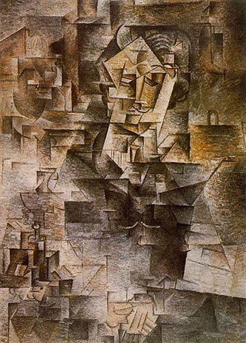

聖翔音楽学園
Position zero，this is tendomaya!
| Thumbnail | Title | Artist | Price | Brief Introduction | |||
|---|---|---|---|---|---|---|---|
|  | The Old Guitarist | Pablo Picasso | $3,330,000 | The Old Guitarist was painted by Picasso in 1903. The owner of the painting was Casa Gimas, a close friend of Picasso who had just committed suicide. During Picasso's time, artists painted many oppressed people at the same time, describing the suffering of the poor. In this sick society. This painting was created in Madrid, with a twisted style (note: the guitarist on the upper body seems to be sloping while the guitarist on the lower half seems to sit cross-legged) reminiscent of El Greco's work. The round guitar, with its brown body, represents the age of painting when only color can change. From the body and the surrounding space, we can see the figure full of loneliness. | |||
|  | Circus Player's House | Pablo Picasso | $3,200,000 | This "Circus Player's House" is an important work painted by Picasso in the "Rose Period" of his artistic career in 1905. The image of the clown has been loved by Picasso since then. Many people believe that the clown is full of Picasso's own portrayal. There are six people in The Circus Actors'House. Four of the men are the four core representatives of the Picasso Gang: Picasso, Apolinel, Jacob and Salmon. The first clown, with his back to the audience, The first clown, with his back to the audience, can see that this is Picasso's figure, while Apolinel appears as a clown and wise man, which shows his position in Picasso's heart. The woman in the lower right corner of the picture is like an illusion. | |||
|  | Portrait of Daniel-Henry Kahnweiler | Pablo Picasso | $2,600,000 | "Portrait of Daniel-Henry Kahnweiler" (Spanish: Retrato de Daniel-Henry Kahnweiler) is a 1910 oil on canvas painting by Pablo Picasso in the Analytical Cubism style. It was completed in 1910, and is in the collection of the Art Institute of Chicago. The artwork displays brown as its prominent color, with dimensions 100.5 cm × 73 cm. The painting depicts Daniel-Henry Kahnweiler, who owned an art gallery in France. The artwork depicts the calm character and diversity of Kahnweiler by using several cubical structures on the canvas. Kahnweiler's head, hands, suit, and a still life to the left remain identifiable. Gifted by Mrs. Gilbert W. Chapman in memory of Charles B. Goodspeed in 1948 to Art Institute of Chicago. |